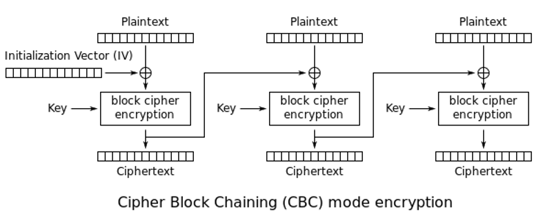
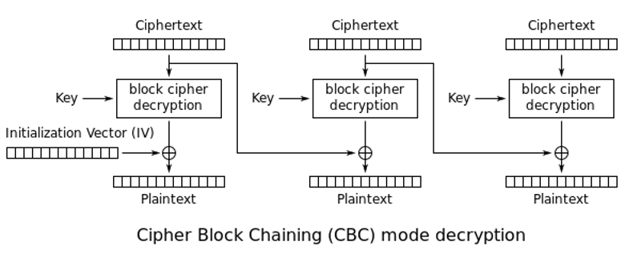
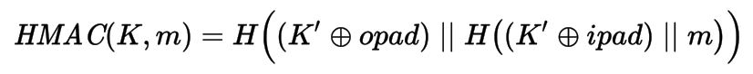

Encryption, authentication and data integrity in PHP 7
by Enrico Zimuel / @ezimuel
Senior Software Engineer
Zend Technologies a Rogue Wave Company
21th October 2016 - ZendCon - Las Vegas
About me

|
|
Encryption in PHP
Mcrypt (outdated)
- Ciphers: rijndael (AES), Twofish, Blowfish, DES, 3DES, etc
- Block modes: CBC, CFB, CTR, OFB, NOFB, NCFB
- Padding: zero padding, padded with '\0'
- No Authentication!
- Deprecated in PHP 7.1
OpenSSL
- Ciphers: RSA, AES, CAMELLIA, DES, RC2, RC4, check with openssl_get_cipher_methods()
- Block modes: CBC, CFB, CTR, ECB, XTS
- Padding: PKCS#1, No padding, SSLV23, PKCS1_OAEP
- Authenticated encryption: GCM, CCM (AEAD proposal for PHP 7.1)
Symmetric encryption
CBC encryption
CBC decryption
PBKDF2
- PBKDF2 (Password-Based Key Derivation Function 2) is a key derivation function RFC 2898
- In PHP:
hash_pbkdf2($algo, $password, $salt, $iterations, $length=0, $raw=false) - We will use SHA-256 as $algo
- In 2016 a reasonable $iterations is around 80k
Source: Enough With the Salts: Updates on Secure Password Schemes
HMAC
- Hash-based message authentication code (RFC 2140)

where H is hash function, K is key, K' derivated key, opad is outer padding (0x5c), ipad is inner padding (0x36), ⊕ is XOR, and || is concatenation - In PHP:
hash_hmac ($algo, $data, $key, $raw_output = false) hash_hmac_file ($algo, $filename, $key, $raw_output = false) - We will use SHA-256 as $algo
Why we need authentication?
- Encryption only provides confidentiality
- An attacker can easily alter the encrypted message
- Padding Oracle Attacks can be applied to retrieve the plaintext without the key!
Padding Oracle Attack
- Side channel attack which is performed on the padding of a cryptographic message
- Discovered in 2001 by Serge Vaudenay
- Works on ECB, CBC, OAEP modes for all the block ciphers
- In 2010 the attack was applied to several web application frameworks, including JavaServer Faces, Ruby on Rails and ASP.NET.
- Can be prevented using authentication
Encryption
function encrypt(string $text, string $key): string {
$iv = random_bytes(16); // iv size for aes-256-cbc
$keys = hash_pbkdf2('sha256', $key, $iv, 80000, 64, true);
$encKey = mb_substr($keys, 0, 32, '8bit');
$hmacKey = mb_substr($keys, 32, null, '8bit');
$ciphertext = openssl_encrypt($text, 'aes-256-cbc', $encKey,
OPENSSL_RAW_DATA, $iv
);
$hmac = hash_hmac('sha256', $iv . $ciphertext, $hmacKey);
return $hmac . $iv . $ciphertext;
}Decryption
function decrypt(string $text, string $key): string {
$hmac = mb_substr($text, 0, 64, '8bit');
$iv = mb_substr($text, 64, 16, '8bit');
$ciphertext = mb_substr($text, 80, null, '8bit');
$keys = hash_pbkdf2('sha256', $key, $iv, 80000, 64, true);
$encKey = mb_substr($keys, 0, 32, '8bit');
$hmacKey = mb_substr($keys, 32, null, '8bit');
$hmacNow = hash_hmac('sha256', $iv . $ciphertext, $hmacKey);
if (! hash_equals($hmac, $hmacNow)) {
throw new Exception('Authentication error!');
}
return openssl_decrypt($ciphertext, 'aes-256-cbc', $encKey,
OPENSSL_RAW_DATA, $iv
);
}Timing attacks?
A timing attack is a side channel attack in which the attacker attempts to compromise a cryptosystem by analyzing the time taken to execute cryptographic algorithms
From Wikipedia
To compare two strings in PHP use
hash_equals($known, $user) to prevent timing attacks
Authenticated Encryption
PHP 7.1 provides AEAD support for OpenSSL:
openssl_encrypt ($data, $method, $key, $options = 0, $iv = "",
&$tag = null, $aad = "", $tag_len = 16)
openssl_decrypt ($data, $method, $key, $options = 0, $iv = "",
$tag = null, $aad = "")
Example
$data = 'Hello World!';
$key = random_bytes(32); // 256 bit
// GCM and CCM
$modes = ['aes-256-gcm', 'aes-256-ccm'];
foreach ($modes as $mode) {
$iv = random_bytes(openssl_cipher_iv_length($mode));
$ciphertext = openssl_encrypt($data, $mode, $key,
OPENSSL_RAW_DATA, $iv, $tag
);
printf("%s, tag size: %d bytes\n", $mode, mb_strlen($tag, '8bit'));
$text = openssl_decrypt($ciphertext, $mode, $key,
OPENSSL_RAW_DATA, $iv, $tag
);
printf("Decrypt %s\n\n", $text === $data ? 'Ok' : 'Failed');
}
Best practices for encryption
- Use AES as standard algorithm
- Use CBC or CTR mode
- Use random IVs, different for each encryption
- Generate a encryption key from user's password using a KDF function, e.g. PBKDF2
- ALWAYS use authenticated encryption algorithms
- Secure random number: random_int() or random_bytes()
Public key encryption
&
Digital signature
Hybrid cryptosystem
- Public key algorithms are too slow to encrypt a full text message
- We need a different approach (Hybrid cryptosystem):
- generate a random session key;
- encrypt the session key using a public key algorithm;
- encrypt the message with a symmetric cipher using the session key;
- send the ciphertext and the encrypted session key;
Public and private key
// Generate public and private keys
$keys = openssl_pkey_new(array(
"private_key_bits" => 4096,
"private_key_type" => OPENSSL_KEYTYPE_RSA,
));
// Store the private key in a file
$passphrase = 'test';
openssl_pkey_export_to_file($keys, 'private.key', $passphrase);
// Store the public key in a file
$details = openssl_pkey_get_details($keys);
$publicKey = $details['key'];
file_put_contents('public.key', $publicKey);
Hybrid encryption
$msg = 'This is the secret message';
// Encryption
$key = random_bytes(32);
openssl_public_encrypt($key, $encKey, $publicKey);
$ciphertext = encrypt($msg, $key);
file_put_contents('encrypted.msg', $encKey . $ciphertext);
// Decryption
$ciphertext = file_get_contents('encrypted.msg');
$encKey = mb_substr($ciphertext, 0, 512, '8bit');
$ciphertext = mb_substr($ciphertext, 512, null, '8bit');
$privateKey = openssl_pkey_get_private(
'file:///path/to/private.key',
$passphrase // to access the private key
);
openssl_private_decrypt($encKey, $key, $privateKey);
$result = decrypt($ciphertext, $key); // $result === $msg
Digital signature
- How to provide authentication and non-repudiation?
- A digital signature is a mathematical scheme for demonstrating the authenticity of a digital message or document
- Commonly used for software distribution, financial transactions, and in other cases where it is important to detect forgery or tampering
Signature with OpenSSL
// Compute the signature
$priKey = openssl_pkey_get_private(
'file:///path/to/private.key',
$passphrase
);
$data = file_get_contents('/path/to/file_to_sign');
openssl_sign($data, $sign, $priKey, "sha256");
printf("Signature : %s\n", base64_encode($sign));
// Verify the signature
$pubKey = openssl_pkey_get_public(
'file:///path/to/public.key'
);
$result = openssl_verify($data, $sign, $pubKey, "sha256");
echo $result === 1 ? 'Signature ok' : 'Signature not valid';
Crypto library in PHP
- Halite, based on libsodium;
- defuse/php-encryption;
- zendframework/zend-crypt;
- ezimuel/phpcrypto, for PHP 7.
References: articles and books
- Serge Vaudenay, Security Flaws Induced by CBC Padding Applications to SSL, IPSEC, WTLS..., EUROCRYPT 2002
- J. Rizzo, T. Duong, Practical Padding Oracle Attacks, USENIX WOOT 2010
- M. Bellare, C. Namprempre, Authenticated Encryption: Relations among notions and analysis of the generic composition paradigm, ASIACRYPT 2000
- D. Brumley, D. Boneh, Remote Timing Attacks are Pratical, USENIX Security Symposium, August 2003
- N. Ferguson, B. Schneier, T. Kohno, Cryptography Engineering, John Wiley & Sons, 2010
- Joshua Davies, Implementing SSL / TLS Using Cryptography and PKI, John Wiley & Sons, 2011
- A.J. Menezes, P.C. van Oorschot, S.A. Vanstone, Handbook of Applied Cryptography, CRC Press, 2001
- Ross J. Anderson, Security Engineering, John Wiley & Sons, 2008
References: blog and websites
- Rob Heaton, The Padding Oracle Attack - why crypto is terrifying, 29 Jul 2013
- Dennis Fisher, Padding Oracle’ Crypto Attack Affects Millions of ASP.NET Apps, 13 Set 2010
- J. Rizzo, T. Duong, Practical Padding Oracle Attacks (slides), Black Hat Europe, 2010
- Brian Holyfield, Automated Padding Oracle Attacks with PadBuster, 14 Set 2010
- Moxie Marlinspike, The Cryptographic Doom Principle, 13 Dec 2011
- Matthew Green, How to choose an Authenticated Encryption mode, Hopkins University, 19 May 2012
- Dan Boneh, Cryptography course Stanford University, Coursera
- Thomas & Erin Ptacek, Applied Cryptography Engineering, 22 July 2013
- Thomas Hühn, Myths about /dev/urandom, 20 March 2014
- Timo, Secure random numbers for PHP developers, 8 Nov 2013
- Timo, PHP data encryption primer, 16 June 2014
- Pádraic Brady, Nanosecond Scale Remote Timing Attacks On PHP Applications: Time To Take Them Seriously?, 20 Oct 2010
Thanks!
Rate this talk at https://joind.in/talk/90174
Contact me: enrico [at] zend.com
Follow me: @ezimuel

This work is licensed under a
Creative Commons Attribution-ShareAlike 3.0 Unported License.
I used reveal.js to make this presentation.